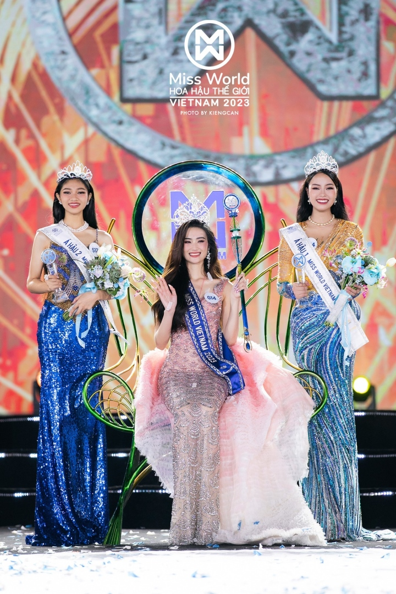

Báo Hàn đưa tin về những tranh cãi của Hoa hậu Ý Nhi
Tại sao khán giả lại phản ứng gay gắt như vậy với một hoa hậu thế giới?

Miss World Vietnam 2023 Huỳnh Trần Ý Nhi vẫn đang là tâm điểm bàn tán của cộng đồng mạng bởi những phát ngôn gây tranh cãi chỉ trong vòng hơn 1 tuần sau đăng quang.
Không chỉ Việt Nam, tin tức về Hoa hậu Ý Nhi hiện đang được được truyền thông Hàn Quốc rất quan tâm. Nhiều trang thông tin của xứ Kim Chi những ngày gần đây đăng tải nhiều bài viết liên quan đến những lùm xùm phát ngôn của nàng hậu Bình Định.Cụ thể, trang Now News đăng tải bài viết với tiêu đề: "Tước vương miện Hoa hậu Thế giới Việt Nam....Khán giả ủng hộ nhiệt liệt, tại sao?".
Trong bài viết này, tác giả đã tường thuật lại phát ngôn: " Trong khi bạn bè đồng trang lứa dành thời gian để ngủ, chơi, uống trà sữa, đi cà phê cùng mọi người thì tôi đã tham gia cuộc thi Hoa hậu " của Ý Nhi.Đồng thời bài viết đề cập tới cuộc tranh cãi giữa vận động viên bơi lội Kim Sơn và Hoa hậu Phương Lê về Ý Nhi, cũng như sự việc nàng Hậu bị lập nhóm anti-fan lên đến hàng trăm nghìn thành viên, bị khán giả đề nghị tước vương miện.
Hay như trang tin Sedaily lại để nhan đề: "Hoa hậu Thế giới Việt Nam có nguy cơ bị tước vương miện sau khi chế nhạo bạn cùng trang lứa". Bài viết cũng nhắc về những phát ngôn gây tranh cãi của Ý Nhi sau khi đăng quang. Trong bài cũng nhắc về việc Ý Nhi lên livestream khóc và xin lỗi khán giả tuy nhiên vẫn chưa được bỏ qua."Điều gì đã xảy ra với cô gái tuổi 20 dành được vương miện Hoa hậu Thế giới Việt Nam?, "Khi các bạn chơi, tôi đã trở thành hoa hậu... Hoa hậu Việt Nam coi thường đồng nghiệp"...cũng là một số tiêu đề được truyền thông Hàn Quốc đặt ra khi đăng tải những thông tin về Ý Nhi.
Huỳnh Trần Ý Nhi vừa đăng quang Miss World Vietnam - Hoa hậu Thế giới Việt Nam 2023. Tuy nhiên, nàng hậu trở thành tâm điểm bàn tán của dư luận vì những phát ngôn về bạn trai, bạn bè đồng trang lứa…Chỉ một tuần sau đăng quang, mạng xã hội xuất hiện nhiều nhóm anti-fan Hoa hậu Ý Nhi với hàng chục nghìn thành viên, trong đó nhóm cao nhất tính đến thời điểm hiện tại là hơn 500 nghìn thành viên.Thậm chí, không ít khán giả còn gửi email đến ban tổ chức, yêu cầu tước vương miện và đề nghị tổ chức Miss World 2024 tước suất thi quốc tế của Ý Nhi.
Trước những tranh cãi, Hoa hậu Ý Nhi bật khóc khi lên tiếng xin lỗi khán giả trên livestream. Hoa hậu tự nhận bản thân chưa đủ chín chắn, thiếu kinh nghiệm khi phải thực hiện nhiều buổi phỏng vấn liên tục vài ngày sau khi đăng quang. Những suy nghĩ vô tư cũng khiến phát ngôn của cô chưa chính xác và đầy đủ.
Sau đó, nàng hậu một lần nữa gửi lời xin lỗi về những phát ngôn của mình trên trang cá nhân. Theo đó, nàng hậu cho biết cô nghiêm túc nhìn nhận những thiếu sót trong suy nghĩ và kỹ năng diễn giải trước công chúng của mình.
Theo Hoa hậu, những thiếu sót đó gây ra những tổn thương cho các bạn đồng trang lứa.Mặc dù Ý Nhi đã lên tiếng xin lỗi và giải thích rõ những phát ngôn gây tranh cãi nhưng vẫn không thể dừng lại làn sóng anti-fan.
Bạn có đồng tình với ý kiến tước danh hiệu hoa hậu của Ý Nhi?
- Đồng ý.
- Không đông ý.
- Ý kiến khác.
Chuyển đến VTC News